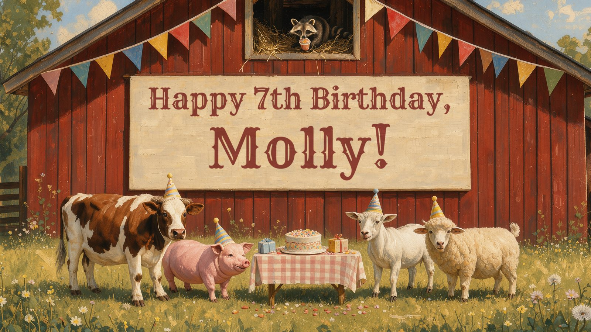
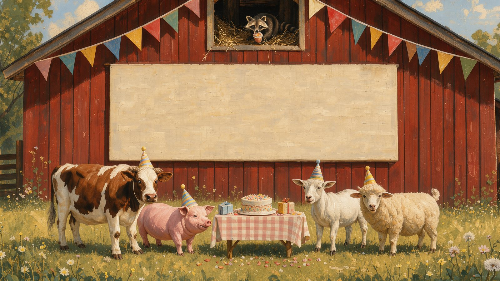
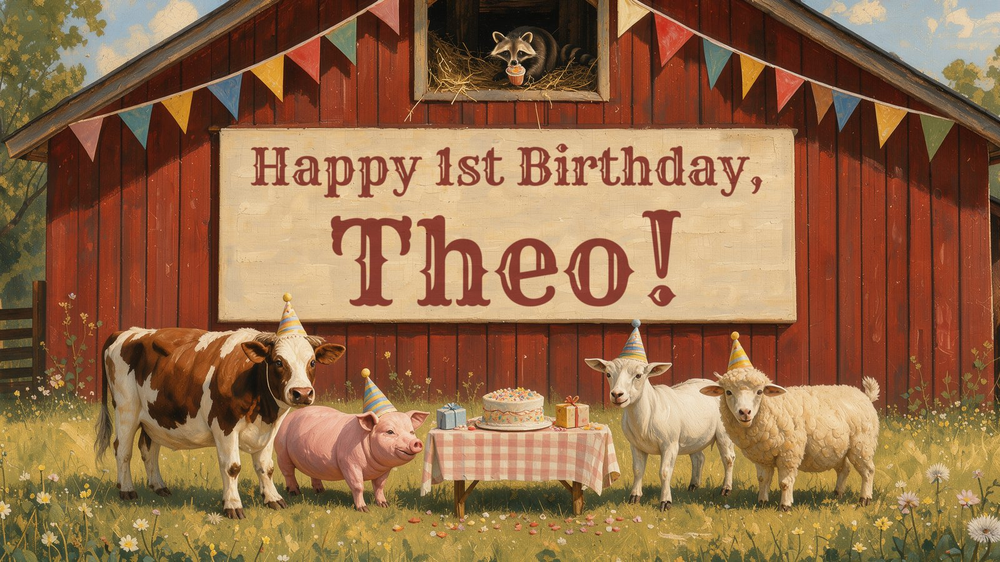
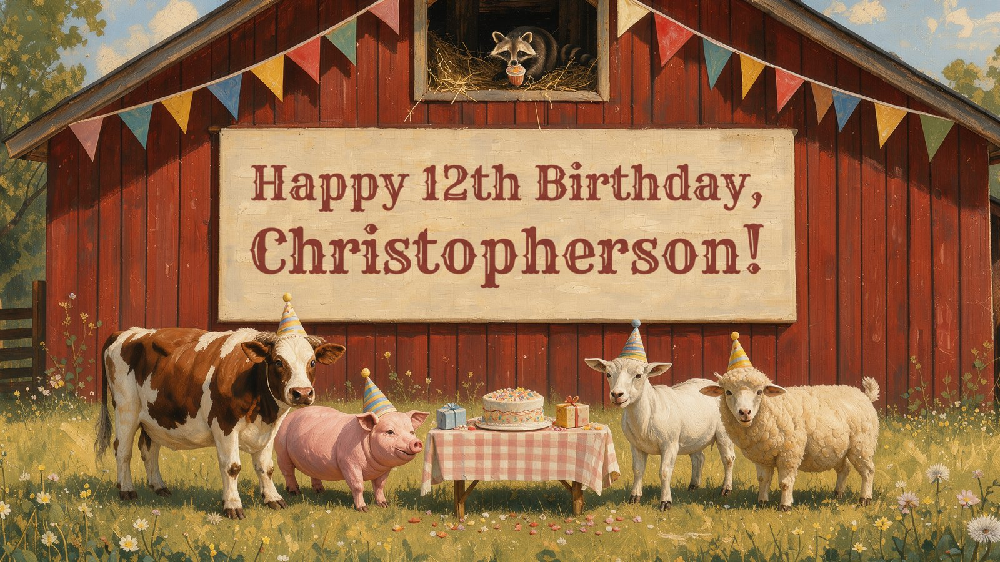
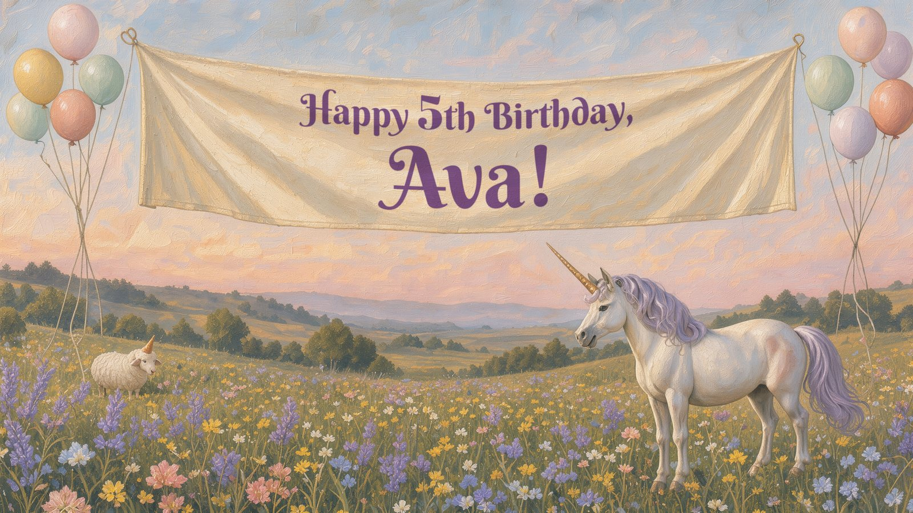
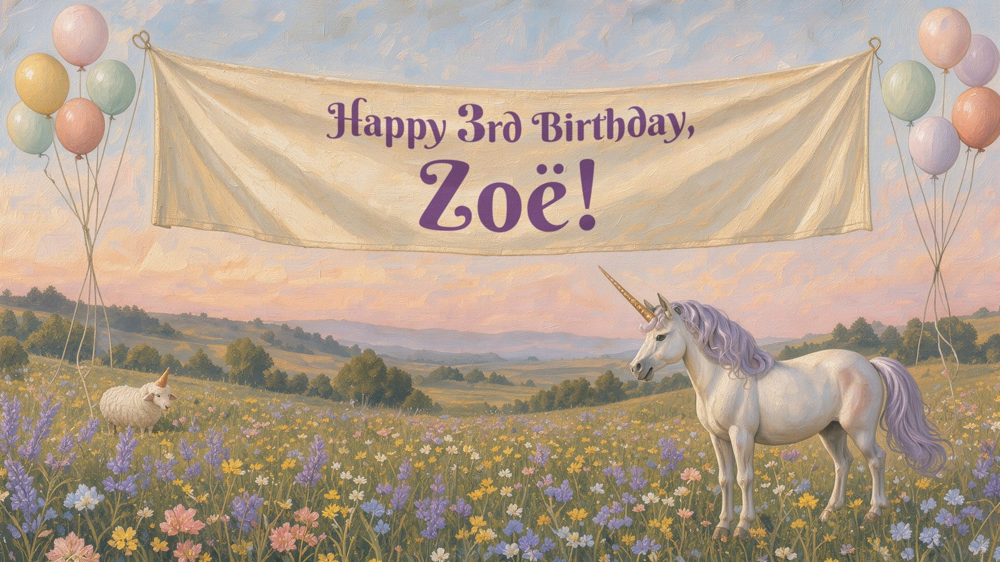
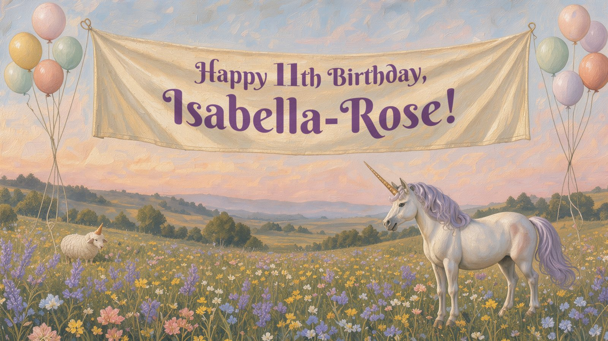
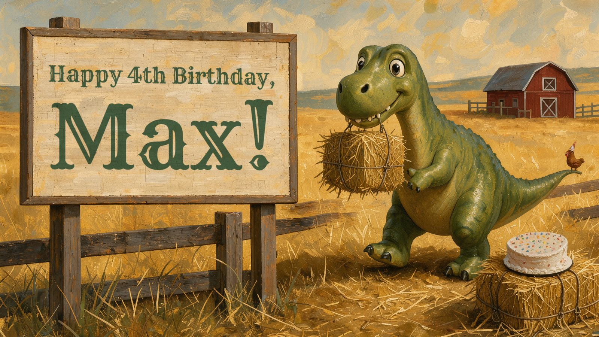
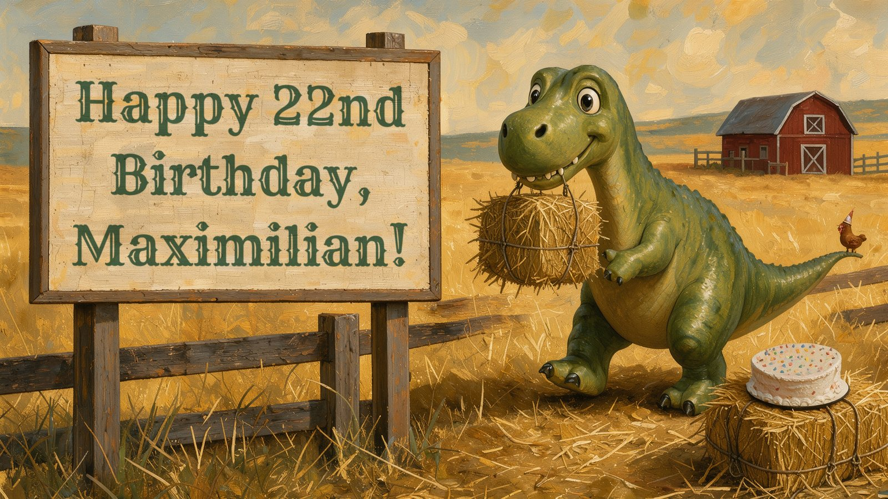

How it works
Pick a scene
Barn party, unicorn meadow or dinosaur farm. Each one has a blank sign waiting for a name.Tell us the name and age
Type them in the boxes when you check out on Etsy: the first name (up to 14 letters) and the age they're turning.We make it
We set the words in a real lettering font, sized to fit the sign, with the brush texture still showing through. Ready in 1 to 2 days.Put it on the TV
Etsy emails you when it's ready. Download the 4K file and add it in the SmartThings app, Art Mode, My Photos.
Before and after


Real examples
Short names, long names, accents and every age come out right: 1st, 2nd, 3rd, 11th, 12th and 22nd.
Barn Birthday Party
Farm animals in party hats. Look up in the hayloft: somebody is getting away with a cupcake.

Unicorn Meadow
Pastel balloons hold up the banner. Far back in the meadow, one ordinary sheep has big hopes and an ice cream cone.



Dinosaur Farm
A friendly dinosaur helping with the hay. Check the tip of its tail for a passenger.


Questions
- Will the name be spelled exactly as I type it?
- Yes, letter for letter, including capitals, hyphens and accents. Please double-check the spelling at checkout.
- How long can the name be?
- Up to 14 letters. Longer names get a little smaller so they always fit the sign.
- Will I see a proof?
- Only if something in the name or age is unclear. Then we message you on Etsy before we make it.
- Which TVs does it work on?
- Samsung The Frame, Hisense Canvas TV, TCL art TVs, and any 16:9 screen that can show a photo. The file is a 3840 x 2160 (4K) JPG.
- Is anything shipped?
- No. It's a digital file you download from Etsy. One-time purchase, no subscription.
- How was it made?
- The scenes are created by Bear Barn Farm with our own prompts and AI image tools, then hand-picked and finished by us. The names are set in real fonts, never drawn by AI.